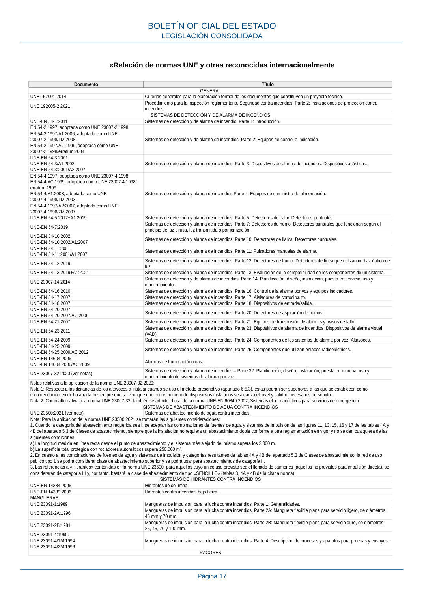

RSCIEI · Página 17 · versión 2025-04-10
SHA256: 85aa0af25d51e5b58d8975a4eefbf76d3f57a8933445cfe814ae9c4818a2e3e7 · página física 17 de 108 · métodos de encabezado
solo si están cotejados.
Formatos: Markdown · JSON de bloques · PDF p. 17 · imagen PNG
«Relación de normas UNE y otras reconocidas internacionalmente Documento Título GENERAL UNE 157001:2014 Criterios generales para la elaboración formal de los documentos que constituyen un proyecto técnico. UNE 192005-2:2021 Procedimiento para la inspección reglamentaria. Seguridad contra incendios. Parte 2: Instalaciones de protección contra incendios. SISTEMAS DE DETECCIÓN Y DE ALARMA DE INCENDIOS UNE-EN 54-1:2011 Sistemas de detección y de alarma de incendio. Parte 1: Introducción. EN 54-2:1997, adoptada como UNE 23007-2:1998. EN 54-2:1997/A1:2006, adoptada como UNE 23007-2:1998/1M:2008. EN 54-2:1997/AC:1999, adoptada como UNE 23007-2:1998/erratum:2004. Sistemas de detección y de alarma de incendios. Parte 2: Equipos de control e indicación. UNE-EN 54-3:2001 UNE-EN 54-3/A1:2002 UNE-EN 54-3:2001/A2:2007 Sistemas de detección y alarma de incendios. Parte 3: Dispositivos de alarma de incendios. Dispositivos acústicos. EN 54-4:1997, adoptada como UNE 23007-4:1998. EN 54-4/AC:1999, adoptada como UNE 23007-4:1998/ erratum:1999. EN 54-4/A1:2003, adoptada como UNE 23007-4:1998/1M:2003. EN 54-4:1997/A2:2007, adoptada como UNE 23007-4:1998/2M:2007. Sistemas de detección y alarma de incendios.Parte 4: Equipos de suministro de alimentación. UNE-EN 54-5:2017+A1:2019 Sistemas de detección y alarma de incendios. Parte 5: Detectores de calor. Detectores puntuales. UNE-EN 54-7:2019 Sistemas de detección y alarma de incendios. Parte 7: Detectores de humo: Detectores puntuales que funcionan según el principio de luz difusa, luz transmitida o por ionización. UNE-EN 54-10:2002 UNE-EN 54-10:2002/A1:2007 Sistemas de detección y alarma de incendios. Parte 10: Detectores de llama. Detectores puntuales. UNE-EN 54-11:2001 UNE-EN 54-11:2001/A1:2007 Sistemas de detección y alarma de incendios. Parte 11: Pulsadores manuales de alarma. UNE-EN 54-12:2019 Sistemas de detección y alarma de incendios. Parte 12: Detectores de humo. Detectores de línea que utilizan un haz óptico de luz. UNE-EN 54-13:2019+A1:2021 Sistemas de detección y alarma de incendios. Parte 13: Evaluación de la compatibilidad de los componentes de un sistema. UNE 23007-14:2014 Sistemas de detección y de alarma de incendios. Parte 14: Planificación, diseño, instalación, puesta en servicio, uso y mantenimiento. UNE-EN 54-16:2010 Sistemas de detección y alarma de incendios. Parte 16: Control de la alarma por voz y equipos indicadores. UNE-EN 54-17:2007 Sistemas de detección y alarma de incendios. Parte 17: Aisladores de cortocircuito. UNE-EN 54-18:2007 Sistemas de detección y alarma de incendios. Parte 18: Dispositivos de entrada/salida. UNE-EN 54-20:2007 UNE-EN 54-20:2007/AC:2009 Sistemas de detección y alarma de incendios. Parte 20: Detectores de aspiración de humos. UNE-EN 54-21:2007 Sistemas de detección y alarma de incendios. Parte 21: Equipos de transmisión de alarmas y avisos de fallo. UNE-EN 54-23:2011 Sistemas de detección y alarma de incendios. Parte 23: Dispositivos de alarma de incendios. Dispositivos de alarma visual (VAD). UNE-EN 54-24:2009 Sistemas de detección y alarma de incendios. Parte 24: Componentes de los sistemas de alarma por voz. Altavoces. UNE-EN 54-25:2009 UNE-EN 54-25:2009/AC:2012 Sistemas de detección y alarma de incendios. Parte 25: Componentes que utilizan enlaces radioeléctricos. UNE-EN 14604:2006 UNE-EN 14604:2006/AC:2009 Alarmas de humo autónomas. UNE 23007-32:2020 (ver notas) Sistemas de detección y alarma de incendios – Parte 32: Planificación, diseño, instalación, puesta en marcha, uso y mantenimiento de sistemas de alarma por voz. Notas relativas a la aplicación de la norma UNE 23007-32:2020: Nota 1: Respecto a las distancias de los altavoces a instalar cuando se usa el método prescriptivo (apartado 6.5.3), estas podrán ser superiores a las que se establecen como recomendación en dicho apartado siempre que se verifique que con el número de dispositivos instalados se alcanza el nivel y calidad necesarios de sonido. Nota 2: Como alternativa a la norma UNE 23007-32, también se admite el uso de la norma UNE-EN 60849:2002, Sistemas electroacústicos para servicios de emergencia. SISTEMAS DE ABASTECIMIENTO DE AGUA CONTRA INCENDIOS UNE 23500:2021 (ver nota) Sistemas de abastecimiento de agua contra incendios. Nota: Para la aplicación de la norma UNE 23500:2021 se tomarán las siguientes consideraciones: 1. Cuando la categoría del abastecimiento requerida sea I, se aceptan las combinaciones de fuentes de agua y sistemas de impulsión de las figuras 11, 13, 15, 16 y 17 de las tablas 4A y 4B del apartado 5.3 de Clases de abastecimiento, siempre que la instalación no requiera un abastecimiento doble conforme a otra reglamentación en vigor y no se den cualquiera de las siguientes condiciones: a) La longitud medida en línea recta desde el punto de abastecimiento y el sistema más alejado del mismo supera los 2.000 m. b) La superficie total protegida con rociadores automáticos supera 250.000 m2. 2. En cuanto a las combinaciones de fuentes de agua y sistemas de impulsión y categorías resultantes de tablas 4A y 4B del apartado 5.3 de Clases de abastecimiento, la red de uso público tipo 1 se podrá considerar clase de abastecimiento superior y se podrá usar para abastecimientos de categoría II. 3. Las referencias a «Hidrantes» contenidas en la norma UNE 23500, para aquellos cuyo único uso previsto sea el llenado de camiones (aquellos no previstos para impulsión directa), se considerarán de categoría III y, por tanto, bastará la clase de abastecimiento de tipo «SENCILLO» (tablas 3, 4A y 4B de la citada norma). SISTEMAS DE HIDRANTES CONTRA INCENDIOS UNE-EN 14384:2006 Hidrantes de columna. UNE-EN 14339:2006 Hidrantes contra incendios bajo tierra. MANGUERAS UNE 23091-1:1989 Mangueras de impulsión para la lucha contra incendios. Parte 1: Generalidades. UNE 23091-2A:1996 Mangueras de impulsión para la lucha contra incendios. Parte 2A: Manguera flexible plana para servicio ligero, de diámetros 45 mm y 70 mm. UNE 23091-2B:1981 Mangueras de impulsión para la lucha contra incendios. Parte 2B: Manguera flexible plana para servicio duro, de diámetros 25, 45, 70 y 100 mm. UNE 23091-4:1990. UNE 23091-4/1M:1994 UNE 23091-4/2M:1996 Mangueras de impulsión para la lucha contra incendios. Parte 4: Descripción de procesos y aparatos para pruebas y ensayos. RACORES BOLETÍN OFICIAL DEL ESTADO LEGISLACIÓN CONSOLIDADA Página 17
